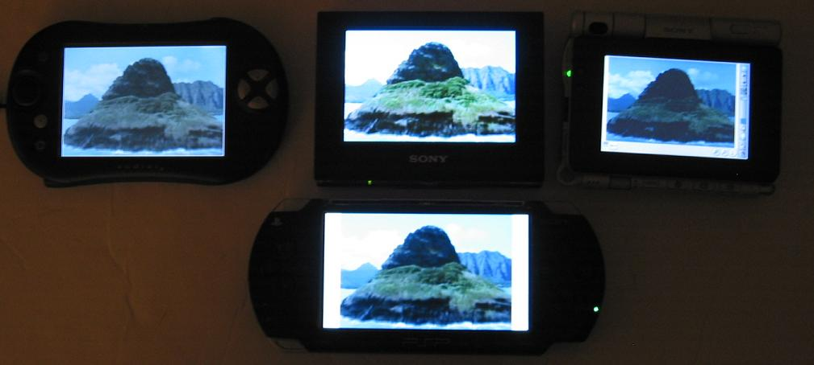

PSAR dumper - version .02"B" - Dump PSAR file - (versions 1.00 to 2.50 decode fully -- 2.50 will barely fit on 32MB stick). Updates 2.6 and 2.7 will extract but not decrypt.
Hardware Hacks
The PSP LCD screen is surprisingly good.
Second only to the OLED screen available in the VZ90 (CLIE PDA, 480x320, Japanese import).
HOWEVER, the sheety plastic on top of the LCD screen is very easily scratched, impairs the image quality.
In the following photos, the Sony CLIE VZ90 (480x320 OLED display), Sony CLIE UX50 (480x320 LED display),
Tapwave Zodiac (480x320 LCD display)
and Sony PSP (480x272 RAW LCD display) are compared.
All the PDAs are stock models, but the PSP has been surgically altered to remove to sheety plastic sheet.
This shows you the potential of the Sony PSP as a media player, ignoring the #1 poor design choice - the lacquered faceplate (cool looking, too easily scratched, optically annoying IMHO)
